{kind=link}
My contribution
As a structures member, I owned the motor-selection and aerodynamic-profile simulations, designed and helped manufacture fins and bulkheads, integrated the motor, and conducted final assembly. I performed several structural analyses and used the team’s master CAD extensively; I did not create the entire vehicle model or every FEA result shown here.
Choosing the ascent, not just the motor.
Gladius III was a 70-pound, 11-foot competition rocket carrying water ballast, an experiment on epoxy behavior under acceleration and vibration, and redundant recovery avionics. It became my first substantial opportunity to connect simulation, manufacturing, and a real competition flight.
The motor trade began before the full vehicle was designed. I used mass analogs and approximate aerodynamic properties with OpenRocket, RASAero II, and SolidWorks models to compare candidate trajectories. We wanted altitude, but peak velocity, acceleration, stability, and price all constrained the choice. Faster ascent also moved the center of pressure forward and threatened stability margins.
The N1000W provided the balance we needed: a slow burn, a manageable ascent profile, a subsonic prediction, and an affordable motor. Its early-model peak acceleration was 62.8 m/s², compared with 293 m/s² for the M6000ST. The choice reduced the severity of the loads the structure and payloads would have to survive.
| Motor | Impulse N·s | Apogee m | Peak speed m/s | Peak accel. m/s² | Flight time s | To apogee s | Stability cal / % |
|---|---|---|---|---|---|---|---|
| N3300R | 14,035 | 5,018 | 441 | 125 | 138 | 29.7 | 1.23 / 5.84 |
| N2220DM | 10,831 | 3,832 | 334 | 96 | 114 | 27.1 | 1.28 / 6.09 |
| N2200W | 13,263 | 4,742 | 367 | 92.7 | 134 | 29.8 | 1.25 / 5.93 |
| M6000ST | 9,606 | 3,520 | 381 | 293 | 107 | 24.6 | 1.59 / 7.55 |
| N1000W · selected | 14,138 | 5,347 | 306 | 62.8 | 147 | 34.3 | 1.19 / 5.64 |
| N4000W-PS | 18,279 | 6,423 | 516 | 144 | 158 | 33 | 1.42 / 6.77 |
| M1939W | 10,369 | 3,931 | 323 | 81.4 | 120 | 27.7 | 1.36 / 6.40 |
| N1975W-PS | 13,822 | 4,940 | 378 | 93.5 | 138 | 30.3 | 1.35 / 6.38 |
| M2000R | 9,186 | 3,415 | 317 | 86.2 | 109 | 25.8 | 1.35 / 6.41 |
| O5500X-PS | 21,395 | 7,843 | 613 | 240 | 180 | 35.2 | 1.51 / 7.18 |
These figures belong to the preliminary comparison, not the final flight prediction. The selected N1000W case estimated a 34.3-second time to apogee, a 147-second total flight time, and a 1.19-caliber stability value in that model. The completed vehicle was later predicted to reach 17,180 feet.
{kind=link}
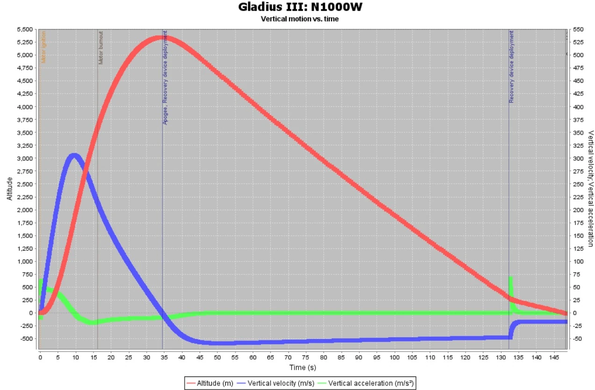
Using the common model to make buildable parts.
The team’s master CAD provided a common dimensional baseline for analysis, manufacturing, and assembly order. I worked with it extensively for CFD and fabrication even though I did not author the complete model. The model captured the nose cone, airframe, fins, motor tube, retaining hardware, centering rings, bulkheads, and payload regions.
The bulkheads did much more than divide the tube. They secured experiments, payloads, avionics, recovery hardware, and ejection charges, and included sealed passages for data cables and deployment leads. We combined structural analysis with the flight and aerodynamic loads to assess the interfaces and the components they carried.
I helped design and manufacture the bulkheads from quarter-inch G12 fiberglass on the waterjet. The drawings translated the model into hole locations, diameters, and material geometry that the assembly actually depended on.
{kind=link}
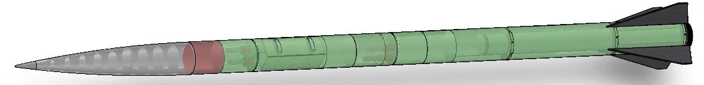
{kind=link}
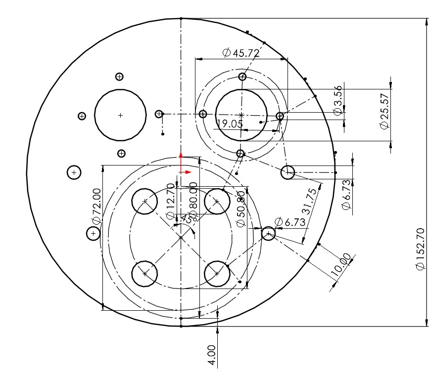
{kind=link}
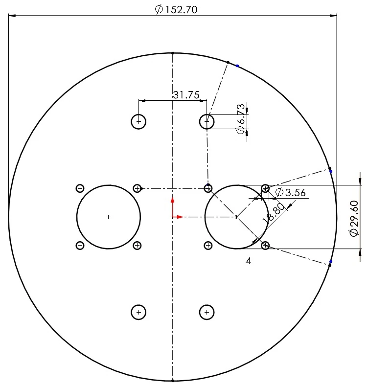
A previous fin failure made the load path matter.
Gladius II had lost its fins to aerodynamic loading, so the fin attachment could not be treated as a routine detail. The structural study compared notched and notchless attachment models, examining normal stress, shear stress, displacement, and strain. Aerodynamic models supplied estimated component loads; the FEA results were used to assess whether the geometry and materials could survive them with margin.
The study also varied the solver setup, including large-displacement and soft-spring configurations. I ran several of these analyses, while the selected pairs below reflect the team’s structural work. Each pair compares notchless and notched attachments using the large-displacement configuration, grouped by the quantity being examined.
Normal-stress comparisons
{kind=link}
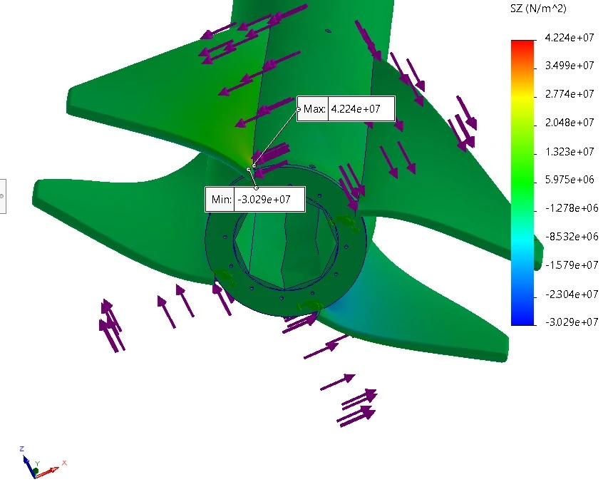
{kind=link}
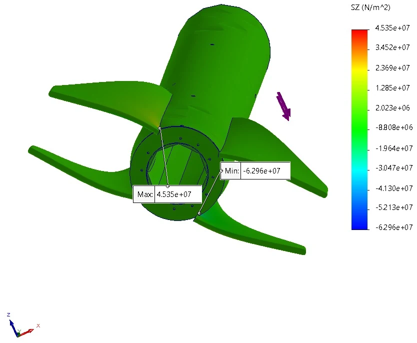
Shear-stress comparisons
{kind=link}
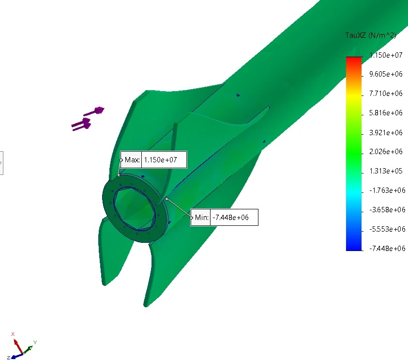
{kind=link}
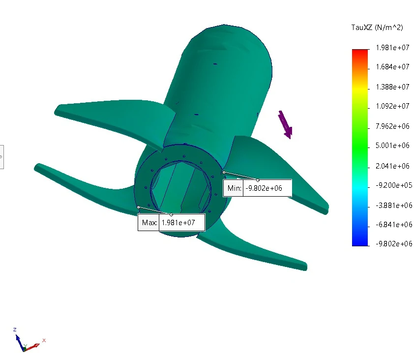
Displacement and strain
{kind=link}
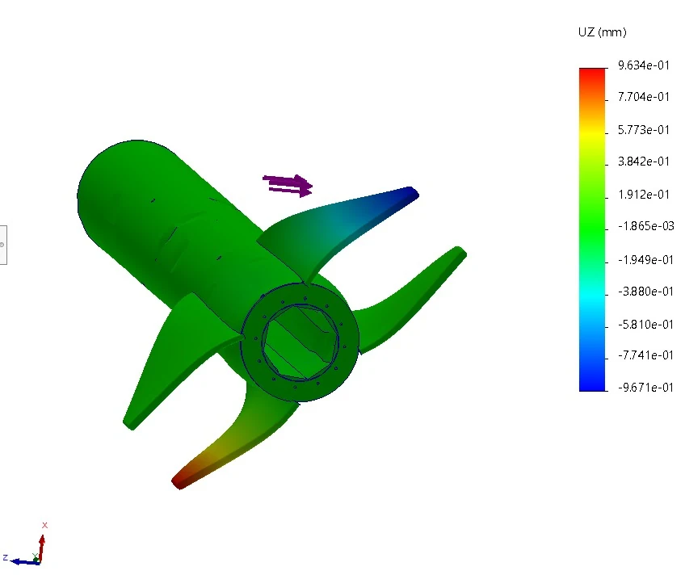
{kind=link}
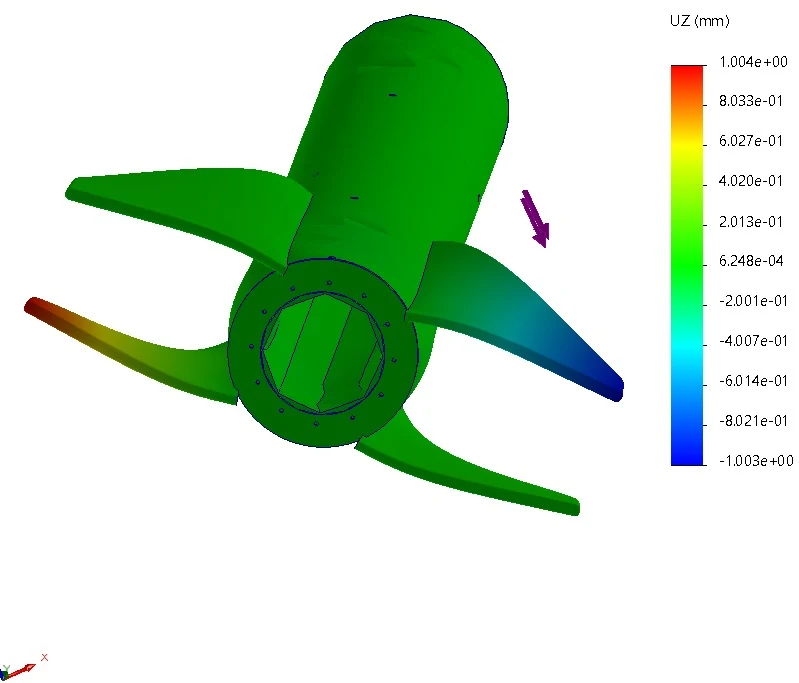
{kind=link}
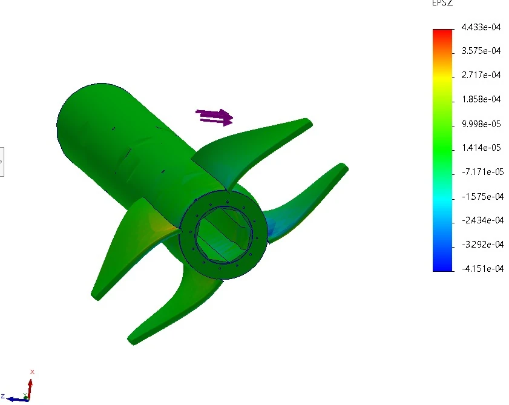
{kind=link}
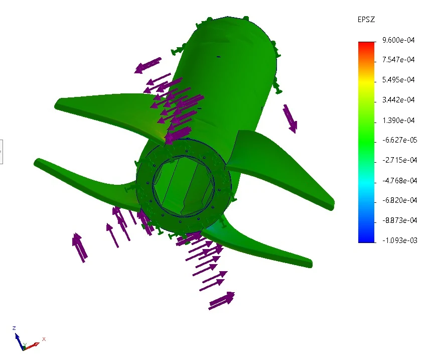
For the aft airframe, we also asked what would happen if the fins no longer contributed structural support. One compression model included their stiffness; another deliberately removed that contribution. The second case was important because partial joint failure should not immediately become body-tube collapse and motor release.
The documented analysis reported less than 0.01 mm maximum deformation with the fins contributing and less than 1 mm in the model that neglected their support. Those were model results under the selected loads. They supported the design decision, while the flight itself remained the integrated test.
{kind=link}
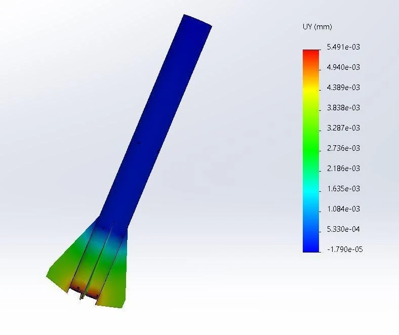
{kind=link}
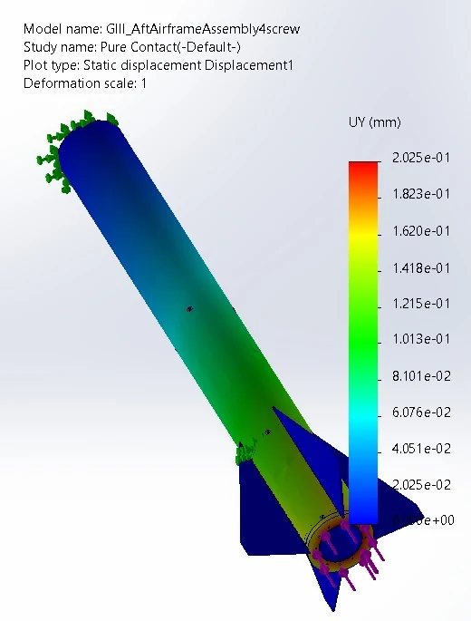
Making the joints the model assumed.
Analysis was only useful if the finished bonds and interfaces resembled what had been modeled. I experimented with epoxy cure methods, surface preparation, and timing to improve fin strength for the weight added. I also designed and manufactured fins and bulkheads, then integrated the motor and helped bring the full vehicle through final assembly.
This was the point where manufacturing and system knowledge became inseparable. A bulkhead’s location affected payload and recovery space; fin alignment affected aerodynamic behavior; and a bond’s quality determined whether the assumed load path actually existed.
{kind=link}
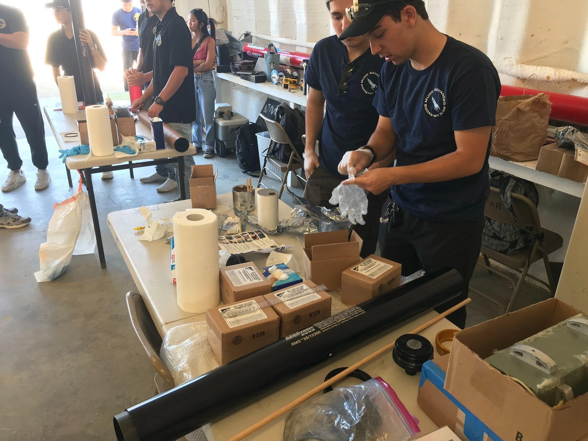

17,172 feet—and an intact recovery.
Gladius III flew to 17,172 feet and placed third at FAR Unlimited 2025. I tracked the vehicle and joined the desert recovery. The final preflight model predicted 17,180 feet, only 8 feet above the measured result.
That is approximately 0.047% difference for this one apogee comparison. It was a strong result, but not a general accuracy guarantee for the simulation tools or every output in the model. The defensible comparison is specific: this vehicle, this flight, and the final predicted and measured apogees.
The project gave me a practical foundation in motor trades, structural analysis, composite assembly, and launch integration. It also set up the next design step: Apollyon’s fin attachment moved away from slots, supported by physical joint tests and a deliberate alignment fixture.
{kind=link}
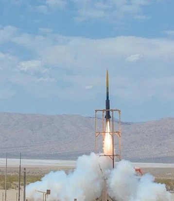
{kind=link}
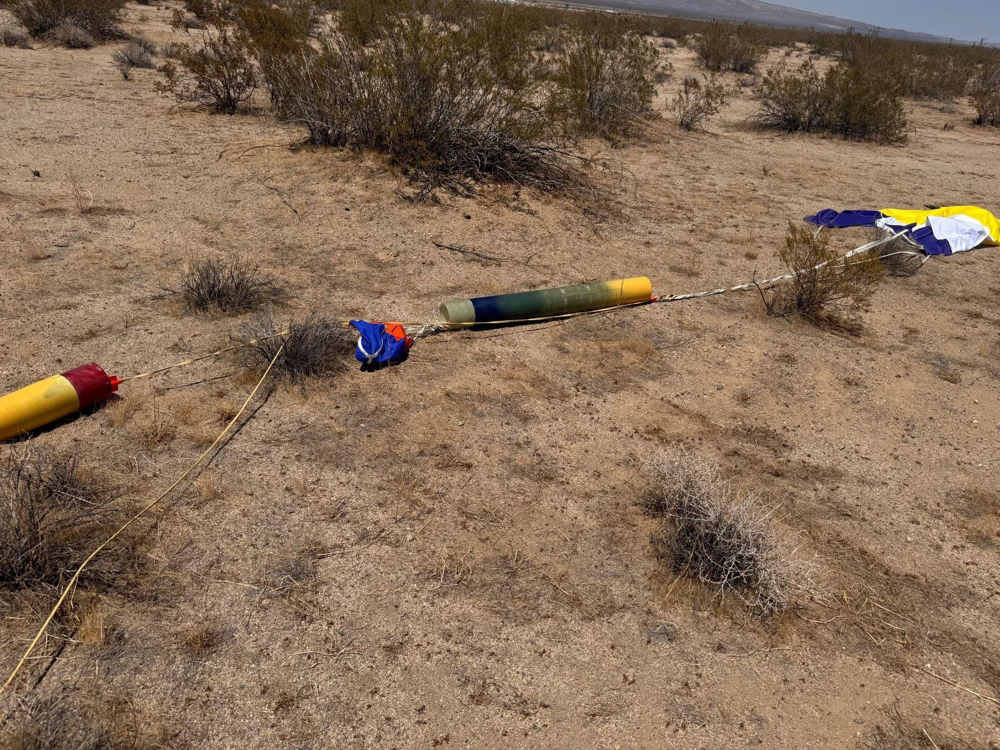
{kind=link}
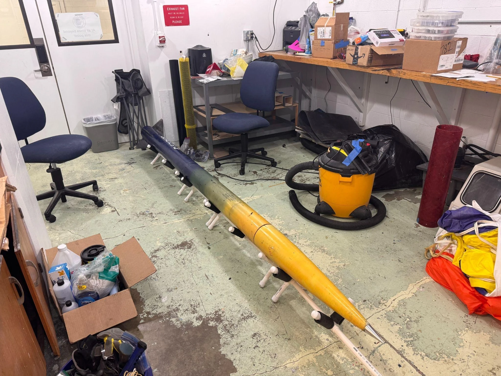
OpenRocket · FEA · SolidWorks · Waterjet G12 · Composite bonding